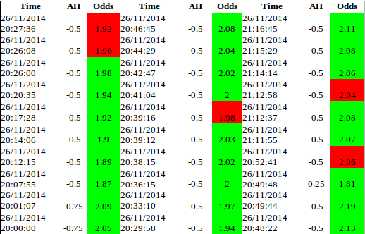
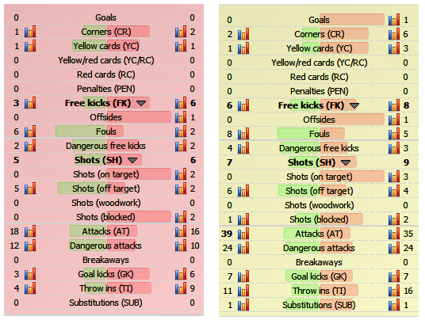
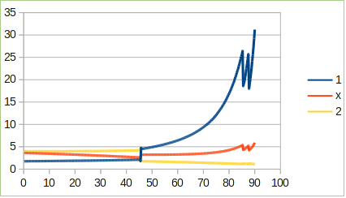

For this example, we will be using the 27-Nov-14 game of Cruzeiro MG vs Atletico Mineiro. We will be utilizing FT markets.
AH
For the AH market, we start the odds at -0.5/1.0 or at -0.75. As expected, it went down to -0.5 after a few minutes (7th minute). We highlight the portions that do not conform to the theoretical movement of the odds.

From the table, we can see that the odds adjusted around the 26th, 39th, 52nd and 72nd minute. What is happening at these moments? We check the game feed (Left, 20:30; Right 21:17):

At the left side, we can see that the favorite is not really winning by a mile. Also, take note that this game is on aggregate. In order to tie, the Home team must score 2. Therefore it is really imperative for the home team to score. From the table, we can see that the bookmaker is “delaying” the -0.5 transition to -0.25. Why is this? This is probably because the Home team is really fighting for their life in this game, therefore they have a higher chance of scoring. We can relate this to the loss aversion article where it states that losing teams work extra hard in order to avoid loss.
OU
Just like the AH market there were some discrepancies in the OU market. However, these were just small ones. It is hard to correlate these deviations to actual bookmaker odds since they may be just because of bet triggering. In any case, it also seems that the bookmaker is delaying the transition to the lower goal line. What does this mean? It means that the market is telling that both teams will be scoring again as seen in the “intense” match.
1×2
The graph below shows the 1×2 odds in time. Around the 45th minute there was a goal, thus the sudden change. It seems that the 1×2 odds are not affected by the AH changes. Why is this? It's because these odds are controlled by us and are automatic; only the initial odds are needed. Without triggering bets, there won't be any deviations to the actual odds. The last few minutes have odds that are erroneous. These odds are not offered since it closes at the 2H 42nd minute.

Conclusions
We discussed the expected movement of the odds and compared it to the actual odds we see. As we have seen, there are times that the odds do not conform to the expected movement. This is because of statistical influence (more attacks, shots, goal kicks etc.) or market movement (bet triggers).
← Back to Sports Betting